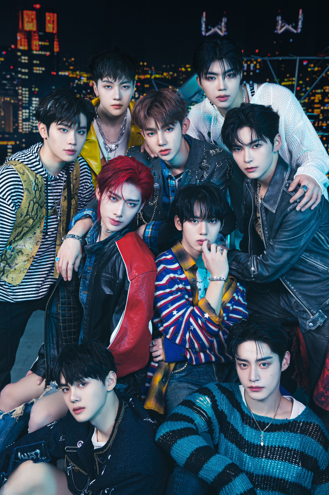

Interest
Drawing
Music
Comics
KPOP
Anime
Drawing
I usually draw when I got free time and sometimes I posted those drawing on TikTok app so I can show others my skills on
Music

I love listening to different artist and genre. Sometimes I listen to some certain songs depends on my mood
Comics

I love reading comic books especially marvel and dc comics it hits different when you knew what happen in comics rather than watching it the movies based on comics
KPOP

I love KPOP so much to the point I start my own youtube channel by making some their lyrics videos. I always listen to KPOP songs and watch some variety show about KPOP.
Anime
When I was young I was addicted to watching anime day by day, night by night I always watched anime until to its last episode. As I grow up thigns changes I still love watching anime but I only watch anime now if I'm in the mood to watch something.